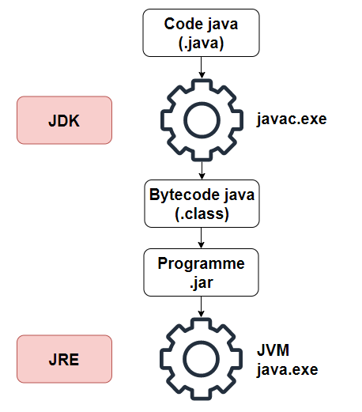
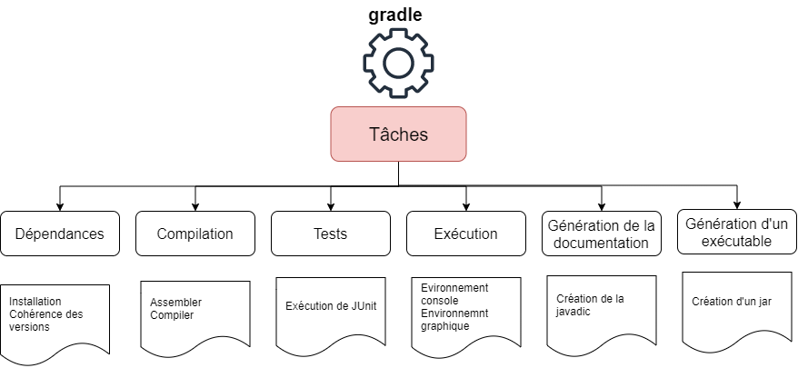
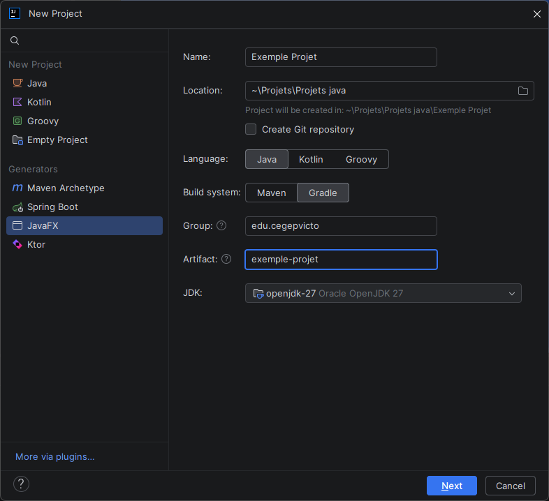
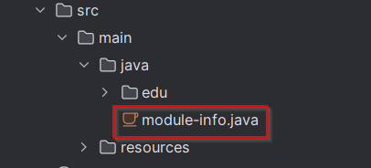
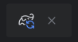
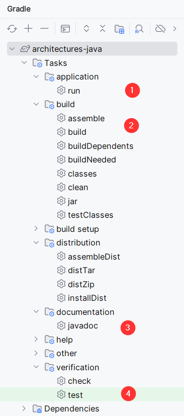
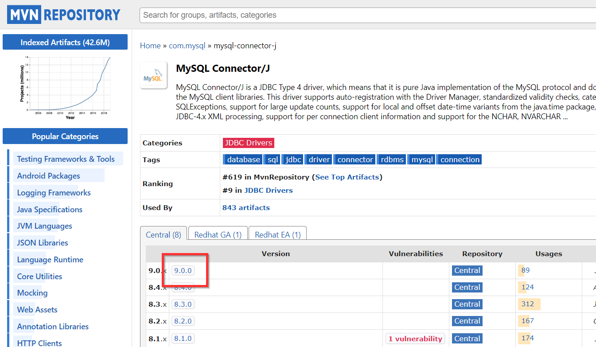
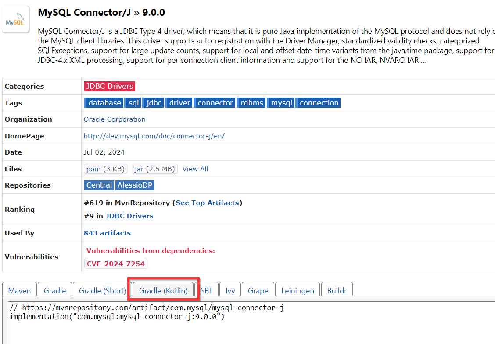

Installation et configuration de Java et Gradle
Contenus de la section
3-3 Sélection et utilisation des technologies selon le projet et ses contraintes
Temps requis
30 minutes
Le langage Java
Java est un langage-objet développé par la compagnie Oracle. La première version de Java a été déployée pour la première fois en 1995. Après des débuts difficiles, le langage est aujourd'hui utilisé dans une grande variété d'applications, allant des systèmes automobiles, des logiciels de gestion au développement de serveurs ou de jeu vidéo (Minecraft, jeu le plus vendu de tous les temps depuis mai 2020, est développé en java). Il a eu une forte influence sur les langages C#, JavaScript, Python et Kotlin.
Java fonctionne avec la Java Virtual Machine (JVM). L'installation d'une JVM particulière au système d'exploitation permet l'exécution du même code source dans plusieurs environnements. La JVM est incluse dans l'installation du Java Runtime Environment (JRE), que chaque utilisateur d'un programme Java doit installer. Cette installation contient un programme appelé « java.exe » qui exécute un programme écrit en Java. Pour développer en Java, en plus de la JRE, il faut installer un Java Development Kit (JDK) qui permet, entre autres, la compilation en java avec le programme « javac.exe ».
Notons que le langage Kotlin est entièrement basé en Java et qu'il est possible d'exécuter du code Java dans un programme Kotlin, car celui-ci s'exécute aussi dans la JVM.
Schéma de java


L'outil Gradle
Travailler avec Java demande de gérer des nombreuses dépendances entre les projets (intégration de bibliothèque) et l'exécution tâches liées à la compilation d'un projet. Au fil des ans, plusieurs outils pour assurer cette gestion ont été développés dont Apache Ant et Apache Maven. Ces outils sont remplacés de plus en plus par le gestionnaire Gradle. Gradle utilise un fichier de configuration pour déterminer les dépendances à installer et peut paramétrer les commandes de compilation d'un projet.
Schéma Gradle


La bibliothèque JavaFX
Java a connu plusieurs bibliothèques majeures pour le développement d'interfaces utilisateurs bureau dont AWT, Swing et JavaFX. Le standard actuel en Java est l'utilisation de JavaFX. Cette bibliothèque fera l'objet d'une page d'information dédiée. Cependant, son intégration est plus simple si, dès le départ, on spécifie son inclusion dans le projet.
La bibliothèque JUnit
C'est la bibliothèque qui sert à exécuter des tests unitaires en Java. La version 5 JUnit5 intègre souvent un sous-module appelé Jupiter qui redéfinit la façon d'écrire les tests par rapport aux versions antérieures de JUnit. On voit souvent aujourd'hui l'appellation Jupiter lorsqu'on traite avec JUnit5.
Travailler avec Java, Gradle et JavaFX dans IntelliJ
L'environnement IntelliJ - Community Edition développé par JetBrains intègre le travail avec Gradle. Il suffit de bien préciser les dépendances à la création du projet afin d'intégrer Gradle, JavaFX et JUnit5 dans un projet.
Alternative à IntelliJ
L'environnement Eclipse (projet libre) est aussi un IDE très populaire pour Java.


Options dans l'interface de création de projets
- New project : permet de créer un projet Java vide.
- JavaFX : permet de créer un projet avec une interface graphique de JavaFX.
- Nom et emplacement du projet : choisi le nom du projet et où celui-ci sera créé.
- Create Git repository : exécute la commande
git initdans le répertoire. Décochez cette option. - Language : sélection du langage du projet. Choisir Java.
- Build system : sélection du système de compilation. Choisir Gradle.
- Group et Artefact : nom du groupe et de l'artefact. Le format est [domaine de niveau 1].[nom de la compagnie].[nom du projet]. Les deux premiers blocs sont le Group, le dernier l'Artefact. Si votre titre comporte plusieurs mots, alors vous devriez les séparer par des traits d'union.
- JDK : sélection de la version du JDK. Utiliser openjdk-27, il peut être nécessaire de d'abord l'installer avec l'option dans ce menu.
Changer la version de Gradle
Contrairement au JDK, on ne peut installer de nouvelle version de Gradle au lancement du projet. On peut travailler avec une version globale de Gradle (installée sur le disque) ou avec un wrapper. Pour la version globale, il faut télécharger et installer manuellement Gradle dans la version souhaitée. Pour le wrapper, qui est la façon par défaut dans IntelliJ, il faut se rendre, après la création du projet dans le fichier suivant :
Le fichier contient le code suivant. La ligne où l'on indique version de Gradle est surlignée, il suffit de remplacer le nombre dans le nom de l'archive par la version souhaitée et l'installation démarre seule.
| Fichier de propriétés de Gradle | |
|---|---|
En appuyant sur le contrôle contextuel de rafraîchissement de Gradle, la nouvelle version sera téléchargée.
Erreur de version
En cas d'évolution entre les notes de cours et les versions réelles, les versions supportées de Gradle pour chaque version de java se trouvent ici : Compatibilité Gradle.
Copier-coller le fichier Gradle d'exemple
Les autres dépendances comme JavaFX sont gérées à partir de l'information du fichier Gradle.
- Supprimer module-info.java si le fichier existe Si vous avez pris le modèle JavaFX, vous risquez d'avoir un module déjà créé. Vous devez supprimer le fichier pour que votre projet démarre.


À l'aide ça ne fonctionne toujours pas
Assurez-vous d'avoir rafraîchi Gradle avec le contrôle contextuel et de lancer le projet avec la tâche Gradle. Assurez-vous également que la barre d'état n'indique pas qu'un téléchargement ou que l'indexage est en cours.


Le menu des tâches
Pour lancer des tâches de Gradle, il faut afficher son menu qui contient toutes les tâches définies. Voici une présentation des principales tâches.


- application > run : permet de lancer le programme. Nécessite le plug-in application.
- build > build : construit le programme et ses dépendances. Les erreurs de compilation seront levées par build.
- documentation > javadoc : génère la javadoc sous forme de site web à partir des commentaires.
- verification > test : exécute les tests unitaires avec le module de test (JUnit).
Ouvrir le menu Gradle
Pour accéder au menu, on utilise le chemin suivant :
Ajouter une dépendance au projet
Pour modifier la configuration du projet Gradle, il faut se rendre le fichier suivant :
Dans le bloc dependencies, on ajoute une instruction implementation avec le nom de l'artefact à inclure. Pour les bibliothèques distribuées en ligne, elles sont habituellement téléchargées du répertoire de Maven.


Sur la page du projet, on sélectionne l'onglet Gradle (Kotlin) et on copie-colle la ligne dans le bloc dependencies


| Modification du bloc dependencies | |
|---|---|
Utiliser Google
Souvent la recherche "nom de la dépendance" + "Gradle" vous amène directement à cet endroit.
Attendre le téléchargement
Chaque fois que l'on change le fichier de build de Gradle, l'outil déclenche une mise à jour et des téléchargements. Il se peut que le contenu ne soit pas immédiatement accessible. Il faut observer la barre d'état en bas à droite de l'interface pour savoir si le système est en téléchargement ou non.
Exécuter un projet avec la configuration de Gradle
Dans les tâches Gradle, par défaut on ne peut exécuter un projet. Utiliser la configuration par défaut d'IntelliJ ne permettra pas de charger les dépendances et provoquera des erreurs au premier lancement. On doit donc ajouter un plug-in dans Gradle. Les lignes surlignées doivent être ajoutées au fichier build.gradle.kts.
| Ajout du plug-in application | |
|---|---|
La première exécution
Seule la première exécution demande d'accéder au menu Gradle et au plug-in application pour lancer le système. Au lancement, IntelliJ enregistre la configuration et permet de lancer avec le lanceur intégré pour les exécutions subséquentes.
En cas de problèmes, il faut toutefois revenir au menu Gradle pour relancer correctement.
Connecter la console d'IntelliJ pour la saisie de données.
Pour que les projets démarrés dans une tâche Gradle reconnaissent la console d'IntelliJ pour la saisie dans la console, il faut ajouter les lignes suivantes dans le fichier build.gradle.kts.